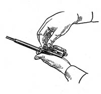

"ВЕТЕРАНИ ГОВОРЯТЬ"
Можливо є щось з Вашого досвіду з цієї тематики, чим би могли поділитись, що могло б стати в
нагоді
побратимам
Напишіть і я розміщу це в низу статті в окремому розділі
5,45-мм автомат Калашнікова є індивідуальною зброєю призначеною для знищення живої сили і ураження вогневих засобів противника. Для ураження противника у рукопашному бою до автомата приєднується багнет.
Для стрільби і спостереження в умовах природного нічного освітлення до автоматів АК-74Н, АКС-74Н і кулеметів РПК-74Н, РПКС-74Н* приєднується нічний стрілецький приціл універсальний (НСПУ). Додаткові літери скороченого найменування автомата (кулемета) означають: “Н” - з нічним прицілом; “С” – із прикладом, що складається
Мал. Загальний вигляд 5,45-мм автомата Калашнікова:
а – з постійним прикладом (АК-74); б – з прикладом, що складається
(АКС-74); в – з постійним прикладом та нічним прицілом (АК-74Н);
г – з прикладом, що складається, та нічним прицілом (АКС-74Н)
| Характеристика | Значення | |
|---|---|---|
| Балістичні | ||
| Калібр | 5,45х39 | |
| Прицільна дальність | 1000 м | |
| Дальність ефективного вогню по наземних та повітряних цілях( літаки, вертольоти, парашутисти) | 500 м | |
| Дальність прямого пострілу по грудній фігурі (50 см висота) | 440 м | |
| Дальність прямого пострілу по ростовій фігурі (150 см висота) | 625 м | |
| Якому прицілу відповідає показчик «П» (постоянка) | приціл 4 | |
| Початкова швидкість кулі | 900 м/с | |
| Убойна дальність | 1350м | |
| Максимальна дальність польоту кулі | 3150м | |
| Темп стрільби (технічна скорострільність) | 600 (постр./хв.) | |
| Конструктивні | ||
| Довжина автомату без багнета з відкинутим прикладом | 940 мм | |
| Довжина автомату без багнета зі складеним прикладом | 700 мм | |
| Довжина ствола | 415 мм | |
| Довжина нарізної частини ствола | 372 мм | |
| Довжина ходу нарізів | 200 мм | |
| Довжина прицільної лінії | 379 мм | |
| Число нарізів | 4 | |
| Товщина мушки | 2 мм | |
| Вагові | ||
| Вага автомата без багнета із спорядженим патронами пластмасовим магазином | 3,6 кг | |
| Вага набою | 10,2 (г) | |
| Вага кулі | 3,4 (г) | |
| Вага багнета-ножа | 490 (г) | |
| Різні | ||
| Ємність магазину | 30 патронів | |
| Боєкомплект | 450 патронів | |
| Носимий БК | 150 патронів (120+30 трассеров) | |
Для стрільби з автомата АК-74 застосовуються в основному наступні боєприпаси:
5.45х39 ПАТРОН С ОБЫКНОВЕННОЙ ПУЛЕЙ - 5.45 ПС
5,45-мм патрон с обыкновенной пулей (5,45 ПС) предназначен для поражения живых целей, расположенных открыто или за преградами, пробиваемыми пулей, огневых средств и небронированной техники.
По пробивнойспособности патрон 5,45 ПС практическиравноценен 7,62-мм патрону обр. 1943 г. с пулей ПС,
существеннопревосходя его по дальности прямого выстрела.
5.45х39 ПАТРОНЫ С ТРАССИРУЮЩИМИ ПУЛЯМИ - 5.45 Т

Начальная скорость пули,
м/с..................................890
Дальность трассирования,
м....................................800
Трассер этой пули на дальности до 800м оставляет яркий светящийся след красного цвета, хорошо видимый днем и ночью. При попадании в легковоспламеняющиеся предметы пуля способна воспламенить их.
Трассирующая пуля патрона 5,45 Т
5.45х39 ПАТРОН С ПУЛЕЙ ПОВЫШЕННОЙ ПРОБИВАЕМОСТИ - 5,45 ПП
Масса патрона,
г........................................................10,7
Масса пули,
г...............................................................3,6
Начальная скорость
пули, м/с..................................880
Пуля нового патрона обеспечила значительное повышение пробиваемости средств индивидуальной бронезащиты. По баллистическим характеристикам пули патронов 5,45 ПП и ПС практически идентичны и могут применяться из всех образцов оружия под 5,45-мм патрон.
АК-74 складається з наступних частин та механізмів:
1.ствола зі ствольною коробкою, прицільним пристроєм, прикладом та пістолетним руків’ям; 2. кришки ствольної коробки; 3. затворної рами з газовим поршнем; 4. затвору; 5. зворотного механізму; 6. газової трубки зі ствольною накладкою; 7. ударно-спускового механізму; 8. цівки; 9. магазину; 10. дуловий гальмо-компенсатор; 11. шомпол; 12. баґнет-ніж.
До комплекту автомату входить:
Зазвичай видають шомпол з різьбою, на яку вже приєднується необхідний інструмент. Але буває видають цільні шомпола з вішером (спеціальна сталева петля, куди протягується шматок ганчірки або спонжик)
Автоматична дія автомата базується на використанні порохових газів, що відводяться від каналу ствола до газового поршня затворної рами.
При пострілі частина порохових газів, які слідують за кулею, спрямовує через отвір в стінці ствола в газову камору, тисне на передню стінку газового поршня та відкидає поршень та затворну раму із затвором в заднє положення. При відході назад затвор відчиняє канал ствола, витягує з набійника гільзу та викидає її назовні, а затворна рама стискує зворотну пружину та зводить курок (ставить його на взвод автоспуску).
В переднє положення затворна рама із затвором повертається під дією зворотного механізму, затвор при цьому досилає наступний набій з магазину в набійник та зачиняє канал ствола, а затворна рама виводить виступ (шептало) автоспуску з-під зводу автоспуску курка.
Запирання затвору здійснюється його поворотом праворуч та заходженням бойових виступів затвору за бокові упори ствольної коробки.
Якщо перевідник встановлений на автоматичний вогонь, то стрільба буде продовжуватися до тих пір, поки натиснутий спусковий гачок та в магазині є набої.
Якщо перевідник встановлений на одиночний вогонь, то при натисненні на спусковий гачок відбудеться тільки один постріл; для виконання наступного пострілу необхідно відпустити гачок та знову натиснути на нього.
Розбирання автомату може бути повним і неповним.
Неповне розбирання автомату – для чищення, змащування та огляду автомату.
Повне – для чищення при значному забрудненні автомату, після перебування його під дощем або в снігу, при переході на інше мастило і для ремонту. Занадто часте розбирання автомату шкідливе, тому що прискорює зношення частин та механізмів.
Розбирається і складається автомат на столі або на чистій підстілці. Частини і механізми складати в порядку розбирання, поводитись з ними обережно, не класти одну частину на іншу, не прикладати зайвих зусиль, не робити різних ударів. При складанні автомата звірити номери на його частинах: в кожного автомату номери на ствольній коробці повинні співпадати з номерами на газовій трубці, затворній рамі, затворі, криниці ствольної трубки.
|
|
|
|
|
|
|
7. Відокремити зворотний механізм. |
|
|
8. Відокремити затворну раму з затвором. |
|
|  | 9. Відокремити затвор від затворної рами. |
| 10. Відокремити газову трубку зі ствольною накладкою. |
| Характеристика | Значення |
|---|---|
| Габарит пристрілочної мішені: Висота Ширина |
35 см 25 см |
| Приціл при пристрілювнні | 3 |
| Відстань до мішені | 100 м |
| Перевищення контрольної точки над точкою прицілювання | 13 см |
| Допустимий діаметр кола кучності | 15 см |
| Допустиме віддалення в будь-якому напряму СТВ від КТ | 5 см |
| Зміна СТВ при переміщенні мушкина 1 мм вліво (вправо) | 26 см |
| Зміна СТВ при переміщенні мушки на 1 оберт по висоті | 20 см |
| Кількість боєприпасів на одну серію | 4 |
| Тип боєприпасу | Зі звичайною кулею, бажано однієї партії |
Автомат, який знаходиться у підрозділі, повинен бути завжди готовим до застосування і приведеним до нормального бою. Перевірка бою автомата (кулемета) здійснюються:
У бойовій обстановці повинні бути використані всі можливості для періодичної перевірки бою автоматів і приведення їх до нормального бою.
Перед перевіркою бою автомат необхідно ретельно оглянути і усунути виявлені несправності.
Перевірка бою автомата і приведення його до нормального бою здійснюється під керівництвом командира роти (батареї, взводу) на стрільбищі в безвітряну погоду, в зачиненому тирі або на захищеній від вітру ділянці стрільбища при нормальному освітленні.
Прямі начальники (до командира частини включно) повинні спостерігати за точним дотриманням правил перевірки бою і приведення до нормального бою автоматів (кулеметів).
Стрільба під час перевірки бою автоматів (кулеметів) і приведення їх до нормального бою здійснюється кращими автоматниками (кулеметниками), відібраними командиром підрозділу.
Під час перевірки бою повинні бути присутні автоматники (кулеметники), за якими закріплені автомати, їх командири відділень і майстер із ремонту зброї з необхідним інструментом.
В сучасних умовах КОЖЕН військовослужбовець має вміти і виконувати приведення власної зброї до нормального бою.
Основні етапи приведення стрілецької зброї до нормального бою:
Приведення до нормального бою стрілецької зброї проводиться при наступних умовах:
Стрільба ведеться по перевірочній мішені (або по чорному прямокутнику розміром 35 см за висотою і 25 см за шириною), закріпленій на білому щиті висотою і шириною 0,5 м. Під час стрільби по перевірочній мішені точкою прицілювання є середина нижнього краю мішені, відрізаної під час стрільби із автомата по п'ятій горизонтальній, під час стрільби із кулемета – по восьмій горизонтальній лінії; за контрольну точку (нормальне положення середньої точки влучення) береться центр кругів.
| КТ-контрольна точка; ТП - точка прицілювання. |
Якщо відсутня пристрілочна мішень і стрільба ведеться по чорному прямокутнику точкою прицілювання є середина нижнього краю прямокутника; положення контрольної точки відмічається за прямовисною лінією вище точки прицілювання під час стрільби із автомата на відстані 13 см. Точка прицілювання повинна знаходитись приблизно на рівні очей того, хто стріляє.
Перевірка бою автомата (кулемета) і приведення його до нормального бою здійснюється стрільбою патронами із звичайною кулею. Дальність стрільби 100 м, приціл 3, цілик 0. Положення для стрільби: із автомата – лежачи з упора.
Автомат – без багнета. Автомат приводиться до нормального бою з дульним гальмом-компенсатором, а куле-мет – з полум'ягасником, які в подальшому під час стрільби не скручуються.
Перевірка бою і приведення до нормального бою здійснюється: автомата – стрільбою поодинокими пострілами (4 патрони).
При пристрілюванні також знадобиться маркер, лінійка, степлер, скотч, по можливості пристрільний
станок, мушковод, патрони 5,45 ПС бажано одної партії.
В польових умовах досить зручно приводити автомат до нормального бою, використовуючи два ящика
від гранат (ф-1, ргд-5). Ставимо один на одний, при стрільбі ствол автомата лягає на ящик
перпендикулярно ширшій частині, а магазином упираєтесь в бічну площину вашої конструкції.
Для перевірки бою поодинокими пострілами той, хто стріляє, здійснює чотири постріли, ретельно і одноманітно прицілюючись під середину нижнього краю перевірочної мішені (чорного прямокутника). Після припинення стрільби командир, що керує перевіркою бою, оглядає мішень і за розташуванням пробоїн визначає кучність бою та положення середньої точки влучення. Солдатам і сержантам, які здійснюють стрільбу, оглядати мішені забороняється.
Кучність бою визнається нормальною, якщо всі чотири пробоїни або три (при одній, що відірвалася) вміщуються в круг діаметром 15 см.
Для зручності можете вирізати коло радіусом 15 см в аркуші картоні або фанері. І це коло накладати на влучання.
Якщо кучність розміщення пробоїн не задовольняє вимоги, то стрільба повторюється. При повторному незадовільному результаті стрільби автомат відправити до ремонтної майстерні для усунення причин розкидання куль.
Якщо кучність розташування пробоїн буде визнана нормальною, то командир визначає середню точку влучення і її розташування відносно контрольної точки.
Для визначення середньої точки влучення за чотирма пробоїнами потрібно:
Точка ділення, найближча до перших трьох пробоїн і буде середньою точкою влучення чотирьох пробоїн.
а, б – за чотирма пробоїнами;
в – за трьома пробоїнами;
г – визначення пробоїни, що відірвалася;
д – під час стрільби автоматичним вогнем
Середню точку влучення можна визначити також наступним способом:
Якщо всі чотири пробоїни не вміщуються в круг діаметром 15 см, то середню точку влучення дозволяється визначити за трьома більш кучно розташованими пробоїнами за умови, що четверта пробоїна віддалена від середньої точки влучення трьох пробоїн більше, ніж на 2,5 радіуса круга, який вміщує ці три пробоїни. (варіант г на попередньому малюнку)
Для визначення середньої точки влучення за трьома пробоїнами потрібно:
Точка ділення, що є найближчою до перших двох пробоїн і буде середньою точкою влучення. (варіант в на попередньому малюнку )
При нормальному бою автомата середня точна влучення повинна співпадати з контрольною точкою або відхилятися від неї у будь-якому напрямкові не більше, ніж на 5 см, тобто вона повинна не виходити за межі малого круга перевірочної мішені.
Автомат, бій якого під час перевірки поодинокими пострілами виявиться ненормальним, приводиться до нормального бою.
Якщо під час стрільби поодинокими пострілами середня точка влучення відхилилась від контрольної в будь-який бік більше, ніж на 5 см, то згідно цього здійснюються зміни положення мушки:
Це правило називається "Куля мушку водить" тобто в яку сторону піло попадання, туди і зміщаєму мушку по горизонталі і по вертикалі.
При переміщенні мушки вбік на 1 мм середня точка влучення під час стрільби на 100 м із автомата зміщується на 26 см. Один повний оберт мушки переміщує середню точку влучення за висотою під час стрільби на 100 м із автомата на 20 см.
Тобто якщо говорити простіше, то якщо визначена вами СТВ зміщена відносно контрольної
точки вправо або вліво на 26 см, то необхідно перемістити мушку на 1 мм в потрібному напрямі.
Для спрощення перераховуєм і отримуєм наступне: кожний 1 см зміщення СТВ відносно КТ по
горизонталі вимагає зміщення мушки по горизонталі на 0,038 мм.
Наприклад, СТВ отримали лівіше від КТ на 35 см. Рахуємо: 35 * 0,038 = 1,34. Тобто треба змістити
мушку на 1,38 мм вліво.
По вертикалі. Якщо СТВ змістилась вгору або вниз від контрольної точки на 20 см, треба здійснити
один повний оберт для повернення мушки в правильне положення, чверть оберта дорівнює відповідно
5 см. Так як проворот мушки ми здійснюємо за допомогою пеналу, то по перехрестю дуже легко
здійснювати поворот мушки на чверть. Знову ж таки перераховуємо для спрощення: кожний 1 см
зміщення СТВ відносно КТ по вертикалі вимагає переміщення мушки по вертикалі на 0,05 від повного
оберту.
Наприклад, СТВ вище КТ на 30см. Рахуємо 30 * 0,05 = 1,5 - тобто треба підняти мушку на півтори
повних оберти.
Правильність переміщення мушки перевіряється повторною стрільбою.
Після приведення автомата до нормального бою стара мітка на полозку мушки забивається, а замість неї набивається нова.
Останній результат стрільби під час приведення до нормального бою автомата поодинокими пострілами і автоматичним вогнем заноситься в картку якісного стану автомата (кулемета).
Автомат і ручний кулемет повинні зберігатися у повній справності та бути готовими до дії. Це досягається вчасним та вмілим чищенням, змащуванням та правильним зберіганням.
Чищення автомата, який знаходиться у підрозділі, проводиться:
Чищення автомата і ручного кулемета проводити таким чином:
| Приналежність автомата, підготовлена для чищення |
– слугує для спрямування польоту кулі. Всередині має канал з чотирма нарізами, які йдуть зліва вгору праворуч. Проміжки між нарізами називаються полями, відстань між двома протилежними полями (по діаметру) називається калібром каналу ствола, у автомата – 5,45 мм.
У казенній частині канал гладкий, зроблений за формою гільзи – називається набійником.
Ствол: а – зовнішній вигляд ствола автомата; б –
зовнішній вигляд ствола кулемета; в – казенна частина у розтині; г –
перетин ствола;
|
Різьба на дуловій частині слугує для загвинчування дулового гальма-компенсатора та втулки при стрільбі холостими набоями.
- слугує для підвищення густості бою при стрільбі чергами та зменшення енергії віддачі.
|
Дуловий гальмо-компенсатор:
|
|
Основа мушки: 2– упор для баґнет-ножа з отвором для шомпола; 3 – ковзанок з мушкою;
5 – фіксатор; 6 – різьба для нагвинчування дульного гальмо-компенсатора (пломенегасника). |
| - слугує для спрямування порохових газів зі стволу на газовий поршень затворної рами. |
Ствольна коробка слугує:
- для з’єднання частин та механізмів автомату;
- для забезпечення закривання каналу ствола затвором та запирання затвору. У ствольній коробці розміщується ударно-спусковий механізм. Зверху коробка закривається кришкою.
Ствольна коробка має:
- всередині – вирізи для запирання затвору, задні стінки яких є бойовими упорами: відгини та напрямні виступи для спрямування руху затворної рами та затвору; відбивний виступ для відбивання гільзи, виступ для зачепу магазина;
- позаду зверху – пази: повздовжній – для п’ятки напрямного осердя, зворотного механізму та поперечний – для кришки ствольної коробки;
- в бокових стінках – по чотири отвори, три з них – для вісів ударно-спускового механізму, а четверте – для цапф перевідника;
- знизу – вікно для магазина та вікно для спускового гачка.
До ствольної коробки прикріплені: приклад, пістолетне руків’я та спускова скоба з засувкою магазина.
- слугує для наведення автомату при стрільбі по цілях на різні відстані, він складається з прицілу та мушки.
|
Приціл:
|
запобігає від забруднення частин та механізмів, розміщених в ствольній коробці:
- з правого боку вона має ступінчасті вирізи для проходження назовні відстріляних гільз та для руху руків’я затворної рами;
- позаду – отвір для виступу спрямовуючого осердя зворотного механізму.
|
Кришка ствольної коробки.
|
- слугує для приведення в дію затвора та ударно-спускового механізму.
|
Затворна рама з газовим поршнем:
|
Затворна рама має:
- всередині – канали для поворотного механізму та для затвору.
- позаду – запобіжний виступ;
- по боках – пази для руху затворної рами по відгинах ствольної коробки;
- з правого боку – виступ для опускання / повороту важеля автоспуску та руків’я для перезаряджання;
- знизу – фігурний виріз для розміщення в ньому ведучого виступу затвору, паз для проходження відбивного виступу ствольної коробки.
В передній частині затворної рами прикріплений газовий поршень.
слугує для:
- досилання набою в набійник;
- закривання каналу ствола;
- розбиття капсуля;
- викидання гільзи з набійника.
Затвор складається з: а – остову; б – ударника; в – викидача.
|
Затвор: а – остов затвору; б – ударник; в – викидач;
|
Остов затвору має:
- на передньому зрізі – два циліндричних вирізи для дна гільзи та викидача (1);
- два бокових виступи, які при запиранні заходять у вирізи ствольної коробки (5, 6);
- зверху – ведучий виступ для повороту затвору при запиранні та відпиранні (3);
- з лівого боку – повздовжній паз для проходження відбивного виступу ствольної коробки.
Всередині остов затвору має канал для розміщення ударника (2).
Ударник має бойок та уступ для шпильки.
Викидач з пружиною слугує для викидання гільзи з набійника та утримання її до зустрічі з відбивним виступом.
- слугує для звороту затворної рами з затвором в попереднє положення.
Складається з зворотної пружини (1), спрямовуючого осердя (2), рухомого осердя (3) та муфти (4).
| Зворотний механізм |
складається:
- з газової трубки;
- передньої та задньої з’єднувальних муфт;
- ствольної накладки
|
Газова трубка зі ствольною накладкою:
|
слугує для:
- спуску курка з бойового зводу або із зводу автоспуску;
- нанесення удару по ударнику;
- забезпечення ведення автоматчиного або одиночного вогню;
- припинення стрільби;
- для запобігання пострілів при не запертому затворі;
- для постановки автомата на запобіжник.
Частини ударно-спускового механізму: а – курок; б – бойова пружина; в – спусковий гачок; г – шептало одиночного вогню; д – автоспуск; е – пружина автоспуску; ж – перевідник; з – вісі; и – пружина шептала одиночного вогню; к – сповільнювач курка; л –пружина сповільнювача курка; м – трубчата вісь;
|
Складається з:
- курка (а) з бойовою пружиною (б);
- уповільнювача (к) курка з пружиною (л);
- спускового гачка (в);
- шептала одиночного вогню (г) з пружною (и);
- автоспуску (д) з пружною (е);
- перевідника (ж).
Курок з бойовою пружною слугує для нанесення удару по ударнику.
Сповільнювач курка слугує для сповільнення руху курка вперед з метою підвищення купчастості бою при веденні автоматичного вогню.
Спусковий гачок слугує для утримання курка на бойовому зводі та для спуску курка.
Шептало одиночного вогню слугує для утримання курка після пострілу в крайньому задньому положенні, якщо при веденні одиночного вогню спусковий гачок не був відпущений.
Автоспуск з пружиною слугує для автоматичного звільнення курка зі зводу автоспуску при стрільбі чергами, а також для запобігання спуску курка при незакритому каналі ствола та не запертому затворі.
Перевідник слугує для установки автомата на автоматичний або одиночний вогонь чи на запобіжник.
слугує для зручності дії та захисту автоматника від опіків.
|
Цівка (дерев’яна):
|
слугує для розміщення набоїв та подачі їх у ствольну коробку.
Складається: корпус (1), кришка (2), стопорна планка (3), пружина (4) та подавач (5). Також на магазині є опорний виступ (6) та зачепа (7)
слугує в прикріпленому положенні до автомату як баґнет. В відімкнутому положенні може використовуватись як армійський ніж, як ножиці для різання колючого дроту в загородженнях, як пилка для розпилювання металевих деталей; та як ножиці для різання проводів, що знаходяться під током до 220 В
|
Баґнет-ніж: а – лезо; б – руків’я;
|
слугує для розбирання, складання, чищення та змащення автомату.
До приладдя відноситься:
|
До приладдя відноситься: шомпол (1), протирка (2), йоржик (3), викрутка (4), вибивач (5), пенал (6), кришка (7), оливниця (8), шпилька (9), обіймиця (10), перехідник (11). |
Для заряджання автомату потрібно приєднати до нього заряджений магазин, поставити перевідник на автоматичний вогонь (АВ), відвести затворну раму назад до упору та відпустити її.
При приєднанні магазина його зачіп заходить за затворну раму, трохи опускає набої в магазин, стискуючи його пружину.
При постановці перевідника на автоматичний вогонь ступінчатий виріз в кришці ствольної коробки для руків’я затворної рами звільнюється, сектор перевідника залишається у вирізі шептала одиночного вогню, але не перешкоджає повороту спускового гачка.
При відведенні затворної рами назад, на довжину вільного ходу, вона, діючи переднім скосом фігурного вирізу не ведучий виступ затвору, виходить з вирізів ствольної коробки – відбувається відпирання затвору; виступ затворної рами звільнює важіль автоспуску і шептало автоспуску під дією пружини притискується до передньої площини гачка.
При подальшому відведенні затворної рами разом з нею відходить назад затвор, відкриваючи канал ствола; поворотна пружина стискується, курок під дією затворної рами повертається на вісі: бойова пружина завертається; бойовий звід курка послідовно застрибає за фігурний виступ спускового гачка, під заскочку сповільнювача курка, і курок стає на шептало автоспуску; важіль автоспуску при цьому підіймається догори і стає на шляху руху затворної рами.
Як тільки нижня площина затворної рами пройде вікно для магазинів, набій під дією пружини магазина підіймається догори до упору верхнім набоєм у загин стінки магазину.
При відпусканні затворної рами вона разом із затвором під дією зворотного механізму подається вперед: затвор виштовхує з магазину верхній набій, досилає його в набійник та закриває канал ствола. При підході затвору до казенного зрізу ствола зачіп викидача застрибає в кільцеву проточку гільзи; затвор провертається навколо повздовжньої вісі вправо; бойові виступи затвору заходять за бойові упори ствольної коробки – затвор запирається.
Затворна рама, продовжуючи рух у крайнє переднє положення, своїм виступом повертає важіль автоспуску вперед і вниз, виводячи шептало автоспуску з під зводу автоспуску курка.
Курок під дією бокової пружини провертається, виходить з-під заскочки сповільнювача і стає на бойовий звід.
Набої в магазині під дією пружини підіймаються догори.
При постановці перевідника на запобіжник, перевідник закриває ступінчатий виріз кришки ствольної коробки і стає на шляху руху руків’я затворної рами назад; сектор перевідника провертається вперед і стає під правим прямокутним виступом спускового гачка (запирає спусковий гачок).
Потрібно поставити перевідник на автоматичний вогонь (АВ)
При постановці на АВ сектор перевідника звільнює прямокутний виступ спускового гачка і залишається в вирізі шептала одиночного вогню.
Спусковий гачок отримує можливість провертатись навколо своєї вісі.
Шептало одиночного вогню від повороту разом із спусковим гачком утримується сектором перевідника.
При натискуванні на хвіст спускового гачка його фігурний виступ виходить із зачеплення з боковим зводом курка.
Курок під дією бойової пружини провертається на своїй вісі та енергійно наносить удар по ударнику.
Ударник бойком розбиває капсуль набою. Підпалюється пороховий склад, відбувається постріл.
Куля під дією порохових газів рухається по каналу ствола. Частина газів тисне на газовий поршень та відводить затворну раму назад.
Затворна рама переднім скосом фігурного вирізу провертає затвор навколо повздовжньої осі та виводить його бокові виступи із-за бойових упорів ствольної коробки – відбувається відпирання затвора та відкриття каналу ствола; виступ затворної рами звільнює важіль автоспуску, він під дією пружини підіймається трохи догори, а шептало автоспуску притискується до передньої площини курка.
Затворна рама із затвором по інерції продовжує рух назад; гільза наштовхується на відбивний виступ ствольної коробки та викидається назовні.
Подальша робота частин та механізмів відбувається таким самим чином, як при заряджанні.
Поставити перевідник на одиночний вогонь (ОВ).
При постановці перевідника сектор перевідник звільнює прямокутний виступ спускового гачка, повністю виходить із вирізу шептала одиночного вогню та при стрільбі в роботі ударно-спусковий механізм участі не приймає.
При натискуванні – хвіст спускового гачка, його фігурний виступ виходить із зачепа з бойовим зводом курка.
Курок під дією бойової пружини провертається й наносить удар по ударнику, відбувається постріл. Після першого пострілу частини та механізми виконують та ж саму роботу, що й при автоматичній стрільбі, але пострілу не буде, тому, що разом із спусковим гачком провернулося вперед шептало одиночного вогню. Його зачіп встав на шляху руху бойового зводу курка. Бойовий звід курка заскочив за шептало одиночного вогню, і курок залишається в задньому положенні.
Для виконання наступного пострілу необхідно відпустити спусковий гачок та знов натиснути на нього.
Курок спочатку б’є по заскочці сповільнювача, а потім по передньому його виступу і стає на бойовий звід.
При натискуванні на спусковий гачок його фігурний виступ виходить з зачепа з бойовим зводом курка й робота частин та механізмів повторюється. Відбувається наступний постріл.
| Дальність, м | 50 | 100 | 150 | 200 | 250 | 300 | 350 | 400 | 450 | 500 | 550 | 600 |
| Приціл | Сантиметри | |||||||||||
| 1 | 0 | 0 | -3 | -10 | - | - | - | - | - | - | - | - |
| 2 | 3 | 5 | 5 | 0 | -10 | -25 | - | - | - | - | - | - |
| 3 | 6 | 13 | 17 | 16 | 11 | 0 | -17 | -43 | - | - | - | - |
| 4 | 11 | 24 | 33 | 38 | 37 | 32 | 20 | 0 | -27 | -65 | - | - |
| 5 | 18 | 37 | 53 | 64 | 70 | 71 | 65 | 52 | 31 | 0 | -42 | -98 |
| Дальність, м | 100 | 200 | 300 | 400 | 500 | 600 | 700 | 800 | 900 | 1000 | 1100 | 1200 |
| Приціл | Метри | |||||||||||
| 6 | 0.54 | 0.97 | 1.2 | 1.2 | 0.82 | 0 | -1.5 | -3.7 | - | - | - | - |
| 7 | 0.75 | 1.4 | 1.8 | 2.0 | 1.9 | 1.3 | 0 | -2.1 | -5.2 | - | - | - |
| 8 | 1.0 | 1.9 | 2.7 | 3.1 | 3.2 | 2.9 | 1.9 | 0 | -2.9 | -7.0 | - | - |
| 9 | 1.4 | 2.2 | 3.6 | 4.4 | 4.8 | 4.8 | 4.1 | 2.6 | 0 | -3.8 | -8.9 | - |
| 10 | 1.7 | 3.3 | 4.8 | 5.9 | 6.7 | 7.1 | 6.8 | 5.6 | 3.4 | 0 | -4.8 | -11.1 |
Можливо є щось з Вашого досвіду з цієї тематики, чим би могли поділитись, що могло б стати в
нагоді
побратимам
Напишіть і я розміщу це в низу статті в окремому розділі